5．高次平面曲线和高次曲面
18世纪的人对高于二次的曲线曾经做过一些工作（第23章第3节），但是从1750年到1825年这门学科处于休眠状态。普吕克研究了三次和四次曲线，并且在这工作中放手使用了射影的概念。
在他的《解析几何的体系》（System der analytischen Geometrie，1834）中，他采用了一个虽然方便却不很有根据的原理来建立曲线的标准型。譬如说，为了证明一般的四阶（次）曲线能化成一种特定的标准型，他推理说，如果两种形式中常数的个数相同，就能把一种形式化成另一种。这样，他推理说四阶的三元（三个变量的）形式总能化成
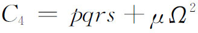
的形状，其中p，q，r，s是线性形式，Ω是二次型，这是因为等式两边都包含14个常数。在他的方程里μ和各系数都是实数。
普吕克还研究了曲线的交点的个数，这是18世纪也做过的题目。他用拉梅1818年在一本书里引进的办法，把通过两条n次曲线
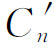
和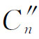
的交点的所有曲线组成的曲线族表示出来。通过这些交点的任何曲线Cn都能表示成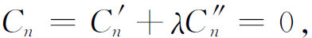
这里λ是参数。
用这个办法，普吕克给克莱姆悖论（第23章第3节）一个清楚的解释。一条一般的曲线Cn被n（n＋3）/2个点所确定，因为这是它的方程中本质的系数的个数。另一方面，由于两条Cn相交于n2个点，过其中n（n＋3）/2个交点的会有无穷多条别的Cn。普吕克解释了这表面上的矛盾(26)。任何两条n次曲线的确相交于n2个点。然而只有
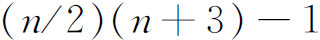
个点是互相独立的。换句话说，如果我们取两条n次曲线通过这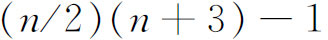
个点，那么过这些点的其他任何一条n次曲线，将通过它俩的n2个交点中的其余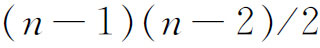
个。例如当n＝4时，有13个点互相独立。通过这13个点的任何两条曲线定出16个点，但是过这13个点的其他任何一条曲线一定通过其余那三个点。然后普吕克研究了(27)m次曲线与n次曲线的相交理论。他把后者看成是固定的，交它的那条曲线是变动的。采用缩写记号Cn表示n次曲线的表达式，别的曲线也用类似的记号，对于m＞n的情形，他写成
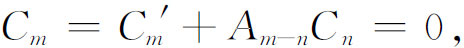
使得Am－n是m－n次多项式。从这方程，普吕克得到确定Cn与一切m次曲线的交点的正确方法。由于根据这方程有
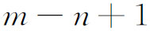
（Am－n中系数的个数）条线性无关的曲线通过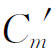
与Cn的交点，普吕克的结论是，在Cn上给定任意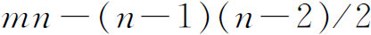
个点，Cn与Cm的mn个交点中其余（n－1）（n－2）/2个就确定了。差不多同时雅可比(28)也得到这同一结果。普吕克在他1834年的《体系》中，后来在他的《代数曲线论》（Theorie der algebraischen Curven，1839）中更明确地给出了现在所谓的普吕克公式，把曲线的阶数n和类数k与简单奇点联系起来。设d是二重点（一种奇点，在那里两条切线不相同）的个数，r是尖点的个数。在线曲线中，二重点对应于二重切线（一条二重切线其实是两个不同的点处的切线），其个数设为t。尖点对应于密接切线（在拐点穿过曲线的切线），其个数设为w。普吕克证明了下列对偶的公式：
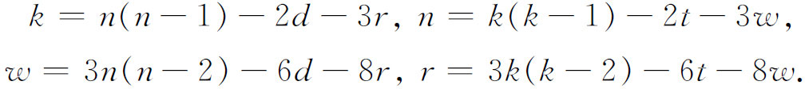
每种元素的个数都包括实的和虚的在内。
于是，在n＝3，d＝0，r＝0的情形，拐点的个数w该是9。到普吕克时，瓜德马尔韦斯（Abbé Jean-Paul Gua de Malves）和麦克劳林已证明了通过一般三次曲线的两个拐点的直线一定通过第三个拐点，而且从克莱罗（Alexis-Claude Clairaut）的时候起就已假定了一般的C3有三个实的拐点这件事。在1834年的《体系》里，普吕克证明了每个C3或者有一个或者有三个实的拐点；在后一种情况下，它们在一直线上。他还得到把复的元素算在内的更一般的结果。一般C3有九个拐点，其中六个是虚的。为了推导这个结果，他利用他的数常数个数的原理证明了
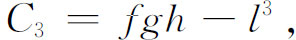
这里f，g，h，l都是线性形式，并且导出了瓜德马尔韦斯和麦克劳林的结果。然后他证明了（推理不完全）C3的九个拐点三个三个在一条线上，一共就有12条这样的线。在几所大学当过教授的黑塞（Ludwig Otto Hesse，1811—1874）补全了普吕克的证明(29)，并且指出那12条线可以分成四个三角形。
作为发现曲线一般性质的另一个例子，我们再考虑n次曲线f（x，y）＝0的拐点问题。普吕克把普通微积分中对于y＝f（x）的拐点条件
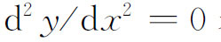
表示成适用于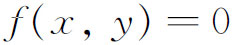
的形式，并得到一个3n－4次的方程。由于原曲线与新曲线必有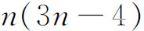
个交点，故原曲线似乎该有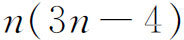
个拐点。因为这数太大了，普吕克设想那3n－4次方程的曲线与原曲线f＝0的n个无穷支中的每一支都有一个切接触，从而公共点中有2n个不是拐点，这就得出正确的个数3n（n－2）。黑塞利用齐次坐标阐明了这件事(30)；他把x换成x1/x3，y换成x2/x3，利用关于齐次函数的欧拉定理，他证明了拐点的普吕克方程能写成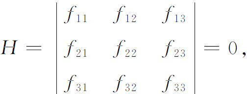
这里的下标表示偏导数。这个方程是3（n－2）次的，所以与n次方程f（x1，x2，x3）＝0交于正确个数的拐点。这行列式本身称为f的黑塞式，是黑塞引进的一个概念(31)。
普吕克，以及其他人，研究了四次曲线。他第一个发现（《代数曲线论》，1839）这种曲线有28条二重切线，其中至多八条是实的。后来雅可比(32)证明n阶曲线一般有
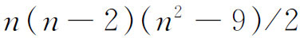
条二重切线。代数几何学的工作也包括空间中的图形。虽然空间中直线的表达式已由欧拉和柯西引进，普吕克在他的《空间几何学的体系》（System der Geometrie des Raumes，1846）里引进一种修改了的形式
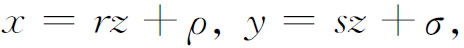
这里的四个参数r，ρ，s，σ确定了该直线。可以用线来造出整个空间，因为举例说，平面无非是线的集合，而点是线的交点。然后普吕克说，如果把线看作空间的基本元素，空间就是四维的，因为要用线来盖住全空间需要四个参数。他放弃了四维点空间的概念，认为它太形而上学了。维数依赖于空间元素，这是新的思想。
空间图形的研究包括了三次和四次曲面。直纹曲面是由一条直线按照某种规律运动而生成的。双曲抛物面（马鞍面）和单叶双曲面就是例子，螺旋面也是。如果一个二次曲面包含一条直线，它就包含无穷多条线，并且是直纹曲面。（这时它必定是锥面、柱面、双曲抛物面或单叶双曲面。）然而这对三次曲面不正确。
作为三次曲面的惊人性质的例子，有1849年凯莱（Arthur Cayley）的发现(33)，每个三次曲线上恰存在27条直线。它们不一定全都是实的，但是对某些曲面它们全是实的。克莱布什［（Rudolf Friedrich）Alfred Clebsch］1871年给过一个例子(34)。这些线有特别的性质。例如，每条与别的10条相交。有许多进一步的工作研究了三次曲面上的这些线。
在关于四次曲面的发现中，库默尔的一个结果值得一提。他研究过表示光线的直线族，在考虑连带的焦曲面(35)时他引进了一个四次曲面（而且类数是四），有16个二重点和16个二重平面，它是一个二阶的光线族的焦曲面。这个曲面称为库默尔曲面，包含那表示各向异性介质中光传播的波前的菲涅耳波曲面为特例。
19世纪上半叶在综合的和代数的射影几何学上所做的工作，开辟了各种几何学研究的一个光辉灿烂的时期。综合的几何学家们统治着这个时期。他们力求从每一新的结果中发现某种普遍原理，这些原理常常不能从几何上得到证明，然而他们从这些原理得到的彼此联系着并同一般原理联系着的结论多如泉涌。幸而，代数的方法也被引进了，而且，如我们将看到的，终于统治了这个领域。可是我们要把射影几何的历史断开，去考虑一些革命性的新创造，它们影响了几何学中以后的所有工作，实际上还根本改变了数学的面貌。
参考书目
Berzolari，Luigi：“Allgemeine Theorie der höheren ebenen algebraischen Kurven，”Encyk．der Math．Wiss．，B．G．Teubner，1903-1915，III C4，313-455．
Boyer，Carl B．：History of Analytic Geometry，Scripta Mathematica，1956，Chaps．8-9．
Brill，A．，and M．Noether：“Die Entwicklung der Theorie der algebraischen Functionen in älterer und neuerer Zeit，”Jahres．der Deut．Math．-Verein．，3，1892/1893，109-566，287-312 in particular．
Cajori，Florian：A History of Mathematics，2nd ed．，Macmillan，1919，pp．286-302，309-314．
Coolidge，Julian L．：A Treatise on the Circle and the Sphere，Oxford University Press，1916．
Coolidge，Julian L．：A History of Geometrical Methods，Dover（reprint），1963，Book I，Chap．5 and Book II，Chap．2．
Coolidge，Julian L．：A History of the Conic Sections and Quadric Surfaces，Dover（reprint），1968．
Coolidge，Julian L．：“The Rise and Fall of Projective Geometry，”American Mathematical Monthly，41，1934，217-228．
Fano，G．：“Gegensatz von synthetischer und analytischer Geometrie in seiner historischen Entwicklung im XIX．Jahrhundert，”Encyk．der Math．Wiss．，B．G．Teubner，1907-1910，III AB4a，221-288．
Klein，Felix：Elementary Mathematics from an Advanced Standpoint，Macmillan，1939；Dover（reprint），1945，Geometry，Part 2．
Kötter，Ernst：“Die Entwickelung der synthetischen Geometrie von Monge bis auf Staudt，”1847，Jahres．der Deut．Math．-Verein．，Vol．5，Part II，1896（pub．1901），1-486．
Möbius，August F．：Der barycentrische Calcul（1827），Georg Olms（reprint），1968．Also in Vol．1 of Gesammelte Werke，pp．1-388．
Möbius，August F．：Gesammelte Werke，4 vols．，S．Hirzel，1885-1887；Springer-Verlag（reprint），1967．
Plücker，Julius：Gesammelte wissenscha ftliche Abhandlungen，2 vols．，B．G．Teubner，1895-1896．
Schoenflies，A．：“Projektive Geometrie，”Encyk．der Math．Wiss．，B．G．Teubner，1907-1910，III AB5，389-480．
Smith，David Eugene：A Source Book in Mathematics，Dover（reprint），1959，Vol．2，pp．315-323，331-345，670-676．
Steiner，Jacob：Geometrical Constructions With a Ruler（a translation of his 1833 book），Scripta Mathematica，1950．
Steiner，Jacob：Gesammelte Werke，2 vols．，G．Reimer，1881-1882；Chelsea（reprint），1971．
Zacharias，M．：“Elementargeometrie and elementare nicht-euklidische Geometrie in synthetischer Behandlung，”Encyk．der Math．Wiss．，B．G．Teubner，1907-1910，III，AB9，859-1172．
————————————————————
(1) Nouv．Mém．de l'Acad．de Berlin，1773，121-148，pub．1775＝Œuvres，3，617-658．
(2) Ann．de Math．，11，1820/1821，205-220．
(3) Nouv．Mém．de l'Acad．Roy．des Sci．，Bruxelles，2，1822，169-202．
(4) Jour．für Math．，18，1838，281-296；以及24，1842，83-162，189-250；1842年的文章收在他的Ges．Werke，2，177-308。
(5) Ges．Werke，2，197．
(6) Werke，7，257-264，301-302．
(7) Math．Ann．，68，1909，133-140＝卡拉泰奥多里，Ges．math．Schriften，2，3-11。
(8) Nachrichten König．Ges．der Wiss．zu Gött．，1884，1-13＝Ges．math．Abh．，2，327-340．
(9) Monatsber．BerlinerAkad．，1837，144＝Ges．Werke，2，93和729-731．
(10) 文章未发表，Ges．Math．Abh．，2，344-345。
(11) 施瓦茨的证明可以在库朗（Richard Courant）与罗宾斯（Herbert Robbins）的What Is Mathematics？，Oxford University Press，1941，pp．346-349中找到。法尼亚诺（J．F．de Toschi di Fagnano，1715—1797）给出一个不用微积分的证明，见于Acta Eruditorum，1775，p．297。在施瓦茨之前有过不那么优美的几何的证明。
(12) 一个证明，以及已发表的证明的参考资料，见考克塞特（H．S．M．Coxeter），Introduction to Geometry，John Wiley and Sons，1961，pp．23-25。
(13) 1833出版＝Werke，1，461-522。
(14) Jour．de l'Ecole Poly．，6，1806，297-311．
(15) Ann．de Math．，8，1817/1818，141-155．这篇文章重印在彭赛列的Applications d'analyse et de géométrie（1862-1864）中，2，466-476。
(16) Traité，1，48．
(17) Jour．für Math．，4，1829，1-71．
(18) Ann．de Math．，16，1825-1826，209-231．
(19) Correspondance mathématique et physique，5，1829，6-22．
(20) Correspondance mathématique et physique，4，1828，363-371．
(21) Math．Ann．，6，1873，112-145＝Ges．Abh．，1，311-343．又见第38章第3节。
(22) 1827发表＝Werke，1，1-388。
(23) Jour．für Math．，5，1830，1-36＝Wiss．Abh．，1，124-158．
(24) Jour．für Math．，6，1830，107-146＝Wiss．Abh．，1，178-219．
(25) 译注：这一句原书为“如果一条直线在齐次坐标中的方程是ux＋vy＋wz＝0，又如果x，y，z是固定量，那么u，v，w或与它们成比例的三个数就是这平面上的一条线的坐标。”当x，y，z是固定量时，普吕克的原著说（Wiss．Abh．，1，179）：“方程au＋bv＋cw＝0表示一个点。”
(26) Annales de Math．，19，1828，97-106＝Wiss．Abh．，1，76-82．
(27) Jour．für Math．，16，1837，47-54．
(28) Jour．für Math．，15，1836，285-308＝Werke，3，329-354．
(29) Jour．für Math．，28，1844，97-107＝Ges．Abh．，123-135．
(30) Jour．für Math．，41，1851，272-284＝Ges．Abh．，263-278．
(31) Jour．für Math．，28，1844，68-96＝Ges．Abh．，89-122．
(32) Jour．für Math．，40，1850，237-260＝Werke，3，517-542．
(33) Cambridge and Dublin Math．Jour．，4，1849，118-132＝Math．Papers，1，445-456．
(34) Math．Ann．，4，1871，284-345．
(35) Monatsber．Berliner Akad．，1864，246-260，495-499．